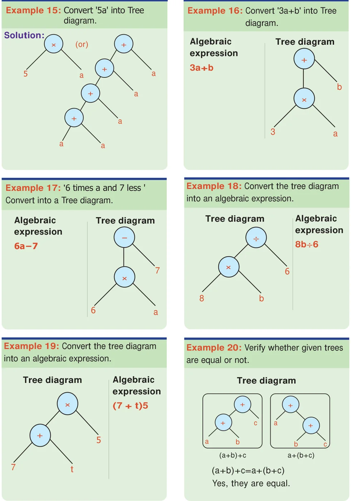

There is more fun with trees. Observe the following trees.
The above tree is nothing but the familiar expression \(a \times (b+c) = (a \times b) + (a \times c)\). Thus we can see the algebraic expressions as trees.
- The tree on the left has less number of nodes and looks simple.
- The tree on the right has more number of nodes.
- Can we conclude that the value of both the trees are different?

Try these
- Convert the following tree diagrams into an algebraic expression. (See the figures above.)
- Convert the following algebraic expressions into a tree diagram.
- \((x - y) + z\) and \(x - (y + z)\)
- \((p \times q) \times r\) and \(p \times (q \times r)\)
- \(a - (b - c)\) and \((a - b) - c\)
Consider the numerical expression \(9 - 4\), which means 4 is to be subtracted from 9. The meaning of \(9 - 4\) can be represented as a tree diagram.
Suppose the expression is \((9 - 4) \times 2\). This can be represented in prefix notation as \(\times\; -\; 9\; 4\; 2\).
Step 1: \(\times\; (9 - 4)\; 2\)
Step 2: \((9 - 4) \times 2\)
Take the expression \(+\; \times\; -\; 9\; 4\; 2\; 5\):
Step 1: \(+\; \times\; (9 - 4)\; 2\; 5\)
Step 2: \(+\; [(9 - 4) \times 2]\; 5\)
Step 3: \([(9 - 4) \times 2] + 5\)
This is reading an expression from "left to right". Similarly, we can read expressions from "right to left" also.
Hence an expression can be read as "left to right" or "right to left" giving the same answer.
Similarly the numerical expression \([(9 - 4) \times 8] \div [(8 + 2) \times 3]\) can be written as \(\div\; \times\; -\; 9\; 4\; 8\; \times\; +\; 8\; 2\; 3\) (left to right) or \(8\; 9\; 4\; -\; \times\; 3\; 8\; 2\; +\; \times\; \div\) (right to left).
Try these
- \(\times\; -\; +\; 9\; 7\; 8\; 2\)
- \(\div\; \times\; +\; 2\; 3\; 8\; 5\)